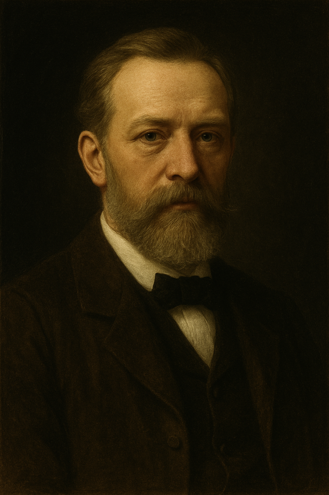

Wilhelm Jordan
Biografía
Carl Friedrich Wilhelm Jordan (Ellwangen, 1 de mayo de 1842 – Hannover, 17 de abril de 1899) fue un geodesista, topógrafo y profesor alemán. Conocido por formalizar el algoritmo hoy llamado eliminación de Gauss-Jordan, contribuyó a la triangulación de Alemania y a la primera topografía científica del Sáhara central (expedición Rohlfs, 1874-1875).
Trayectoria académica y profesional
• Estudió ingeniería en la Gewerbeschule de Stuttgart (1859-1862).
• Ayudante de geodesia en la misma escuela; catedrático en Karlsruhe con 26 años (1868).
• Participó en la expedición de Gerhard Rohlfs a Fezzán y Kufra (Libia), realizando mediciones astronómicas y gravimétricas
• Desde 1881 hasta su muerte fue profesor de Geodesia y Geometría práctica en la Technische Hochschule Hannover.
• Fundador y editor (1873) del Zeitschrift für Vermessungswesen (hoy Journal of Geodesy).
Eliminación de Gauss-Jordan
En la 4.ª edición de su Handbuch der Vermessungskunde (1895) describió un procedimiento matricial para transformar el sistema normal Ax=b de mínimos cuadrados en I mediante operaciones elementales sobre filas:
El algoritmo aplica pivoteo sobre la diagonal de A, anulando sucesivamente los demás elementos de cada columna tanto arriba como abajo del pivote (diferencia clave respecto a la eliminación de Gauss). El resultado proporciona simultáneamente la matriz inversa A−1 y la solución x sin paso de sustitución hacia atrás.
Trabajos destacados
• Handbuch der Vermessungskunde (1872-1895): manual de referencia en geodesia, alcanzó 10 ediciones y fue
traducido a varios idiomas.
• Contribuciones a la nivelación de precisión del Imperio Alemán y a la adopción de un geodetic datum unificado.
• Estudios de isostasia y deflexión vertical derivados de la campaña del Sáhara.
• Artículos sobre ajuste de observaciones y teoría de errores en el contexto de la cartografía militar.
Legado e influencia
El método Gauss-Jordan se enseña hoy en álgebra lineal y computación científica; aparece en software como MATLAB, NumPy y calculadoras programables. Su Handbuch sentó bases para la ingeniería geodésica alemana y su revista evolucionó al actual Journal of Geodesy de la IAG.
Referencia (formato APA):
Wikipedia contribuidores. (2025, 19 mayo). Wilhelm Jordan (geodesist). En Wikipedia, The free encyclopedia. Recuperado 19 de mayo de 2025, de
https://en.wikipedia.org/wiki/Wilhelm_Jordan_(geodesist).